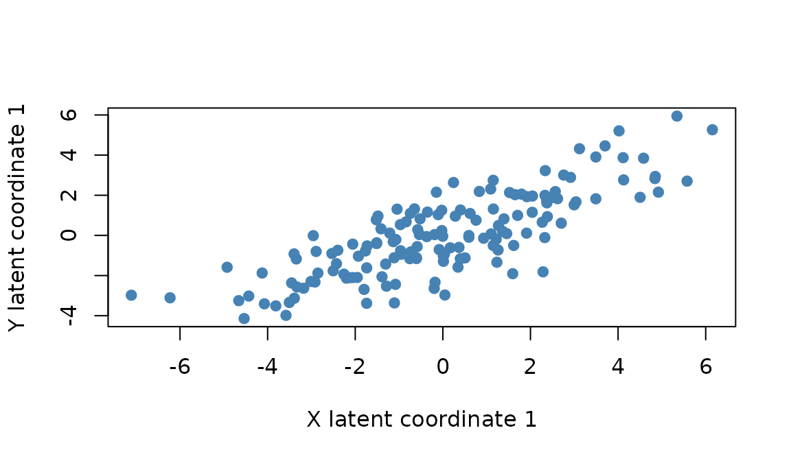
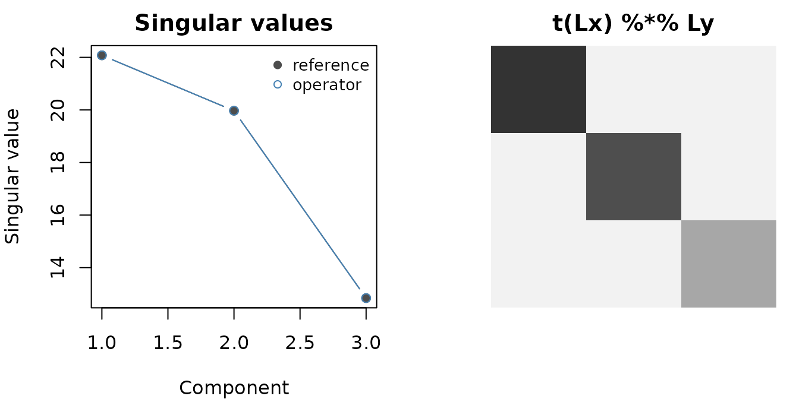

Generalized PLS-SVD: Explicit Whitening Reference
Source:vignettes/gplssvd-reference.Rmd
gplssvd-reference.RmdThis vignette has two audiences. End users who just want to run
generalized PLS on two blocks should read the Quick practical
use section and stop. Contributors who want to verify the
whitening identities behind gplssvd_op() should continue to
the explicit reference implementation below.
Quick practical use
set.seed(123)
N <- 150
X <- matrix(rnorm(N * 8), N, 8)
Y <- matrix(rnorm(N * 5), N, 5)
row_wt <- diag(runif(N, 0.5, 1.5))
col_wt_x <- diag(runif(8, 0.8, 1.2))
col_wt_y <- diag(runif(5, 0.8, 1.2))
fit <- genpls(X, Y, ncomp = 2,
preproc_x = multivarious::center(),
preproc_y = multivarious::center(),
Mx = row_wt, My = row_wt,
Ax = col_wt_x, Ay = col_wt_y)
round(fit$d, 3)
#> [1] 57.572 47.290
Singular values of the generalized cross-product.
That is enough to fit and inspect a model. The remainder of this vignette is for contributors verifying the math.
Notation
GPLSSVD decomposes the relationship between two data blocks
X (N x I) and Y
(N x J) with optional row and column metrics:
-
MX,MY: row metrics (N x N) – weight observations differently for the two blocks -
WX,WY: column metrics (I x IandJ x J) – encode within-block variable relationships -
p,q: generalized singular vectors (saliences) satisfyingp' WX p = I,q' WY q = I -
Fi,Fj: factor scores (loadings scaled by singular values) -
Lx,Ly: latent variables (data projections onto components) -
d: singular values of the whitened cross-product matrix
Reference implementation
The function below builds the whitened cross-product
S = (M_X^{1/2} X W_X^{1/2})' (M_Y^{1/2} Y W_Y^{1/2})
explicitly and runs a dense SVD. It is intentionally small and dense;
the package’s operator-based path avoids materialising the whitened
matrices.
make_sqrt_mats <- function(W, n) {
if (is.null(W)) {
list(sqrt = Diagonal(n), invsqrt = Diagonal(n), full = Diagonal(n))
} else if (is.numeric(W) && length(W) == n) {
d <- pmax(as.numeric(W), 0)
ds <- sqrt(d)
list(sqrt = Diagonal(x = ds),
invsqrt = Diagonal(x = ifelse(ds > 0, 1 / ds, 0)),
full = Diagonal(x = d))
} else if (inherits(W, "diagonalMatrix")) {
d <- pmax(as.numeric(diag(W)), 0)
ds <- sqrt(d)
list(sqrt = Diagonal(x = ds),
invsqrt = Diagonal(x = ifelse(ds > 0, 1 / ds, 0)),
full = W)
} else {
Wd <- as.matrix(forceSymmetric(Matrix(W)))
es <- eigen(Wd, symmetric = TRUE)
Q <- es$vectors
lam <- pmax(es$values, 0)
S <- Q %*% diag(sqrt(lam), nrow = length(lam)) %*% t(Q)
IS <- Q %*% diag(ifelse(lam > 0, 1 / sqrt(lam), 0), nrow = length(lam)) %*% t(Q)
list(sqrt = Matrix(S, sparse = FALSE),
invsqrt = Matrix(IS, sparse = FALSE),
full = Matrix(Wd, sparse = FALSE))
}
}
dense_gplssvd_ref <- function(X, Y,
MX = NULL, MY = NULL,
WX = NULL, WY = NULL,
k = NULL,
center = FALSE, scale = FALSE) {
N <- nrow(X); I <- ncol(X); J <- ncol(Y)
stopifnot(nrow(Y) == N)
cs <- function(A, do_center, do_scale) {
A <- as.matrix(A)
cen <- if (isTRUE(do_center)) colMeans(A) else rep(0, ncol(A))
if (isTRUE(do_center)) A <- A - matrix(rep(cen, each = nrow(A)), nrow(A))
if (isTRUE(do_scale)) {
s <- sqrt(colSums(A^2) / pmax(nrow(A) - 1, 1))
s[s == 0] <- 1
A <- A %*% diag(1 / as.numeric(s), ncol(A))
} else s <- rep(1, ncol(A))
list(A = A, center = cen, scale = s)
}
Xcs <- cs(X, center, scale); X <- Xcs$A
Ycs <- cs(Y, center, scale); Y <- Ycs$A
MXm <- make_sqrt_mats(MX, N); MYm <- make_sqrt_mats(MY, N)
WXm <- make_sqrt_mats(WX, I); WYm <- make_sqrt_mats(WY, J)
Xe <- MXm$sqrt %*% X %*% WXm$sqrt
Ye <- MYm$sqrt %*% Y %*% WYm$sqrt
S <- crossprod(Xe, Ye)
sv <- svd(as.matrix(S))
if (!is.null(k)) {
k <- min(k, length(sv$d))
sv$u <- sv$u[, seq_len(k), drop = FALSE]
sv$v <- sv$v[, seq_len(k), drop = FALSE]
sv$d <- sv$d[seq_len(k)]
}
p <- WXm$invsqrt %*% sv$u
q <- WYm$invsqrt %*% sv$v
Fi <- WXm$full %*% (p %*% diag(sv$d, nrow = length(sv$d)))
Fj <- WYm$full %*% (q %*% diag(sv$d, nrow = length(sv$d)))
Lx <- MXm$sqrt %*% (X %*% (WXm$full %*% p))
Ly <- MYm$sqrt %*% (Y %*% (WYm$full %*% q))
list(d = sv$d, u = sv$u, v = sv$v, p = p, q = q,
fi = Fi, fj = Fj, lx = Lx, ly = Ly, S = S,
center = list(X = Xcs$center, Y = Ycs$center),
scale = list(X = Xcs$scale, Y = Ycs$scale))
}Cross-checking the operator
Run the reference on a small block, run gplssvd_op()
with the same metrics, and compare:
set.seed(1)
N <- 20; I <- 8; J <- 6
X <- matrix(rnorm(N * I), N, I)
Y <- matrix(rnorm(N * J), N, J)
MX <- diag(runif(N, .5, 1.5))
MY <- diag(runif(N, .5, 1.5))
WX <- diag(runif(I, .5, 1.5))
WY <- diag(runif(J, .5, 1.5))
ref <- dense_gplssvd_ref(X, Y, MX, MY, WX, WY,
k = 3, center = TRUE, scale = FALSE)
op <- gplssvd_op(X, Y,
XLW = MX, YLW = MY,
XRW = WX, YRW = WY,
k = 3, center = TRUE, scale = FALSE)
all.equal(ref$d, op$d, tolerance = 1e-6)
#> [1] TRUE
all.equal(diag(crossprod(op$lx, op$ly)), op$d, tolerance = 1e-6)
#> [1] TRUE
round(op$d, 4)
#> [1] 22.0777 19.9684 12.8428
Reference vs operator singular values agree to plotting precision (left). Latent variables show the expected diagonal cross-product structure (right).
The diagonal of t(Lx) %*% Ly recovers the singular
values, as the GPLSSVD identity guarantees.
Where next
See vignette("genpca") for a getting-started walkthrough
and vignette("gpca-metrics") for metric recipes that apply
to both GPCA and GPLSSVD.